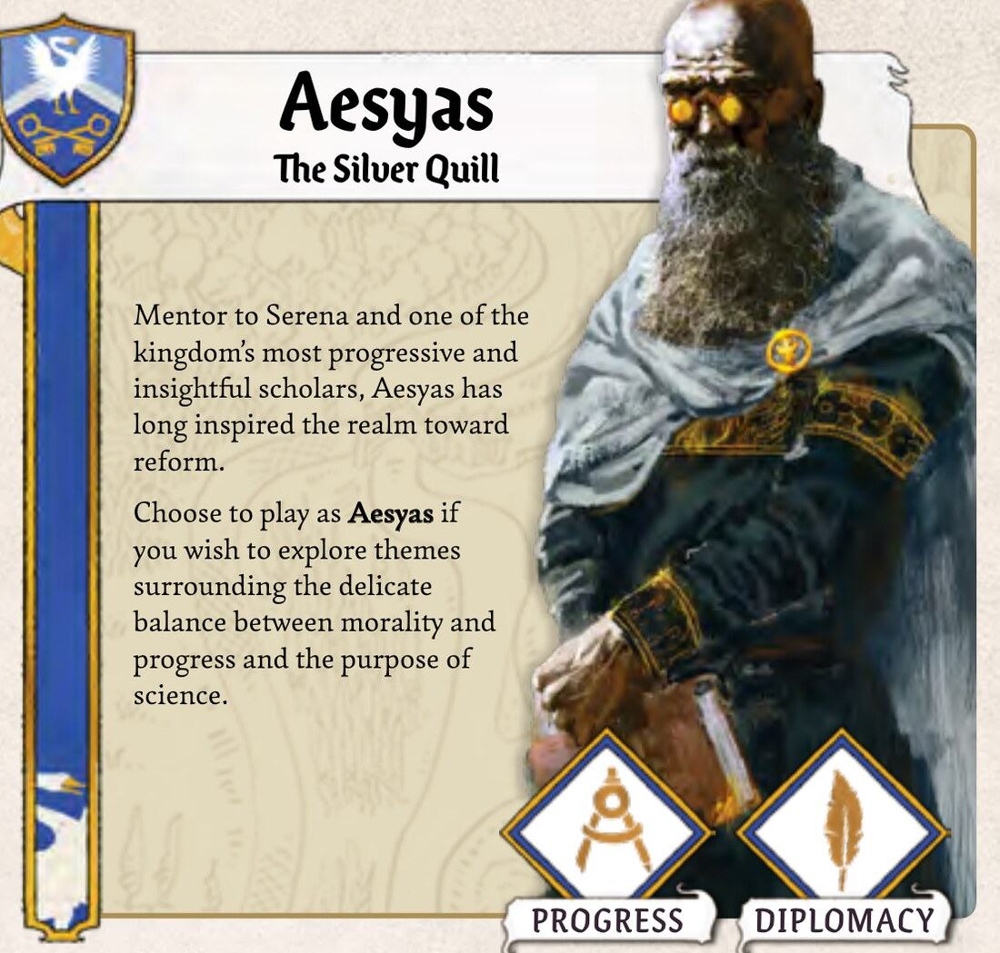
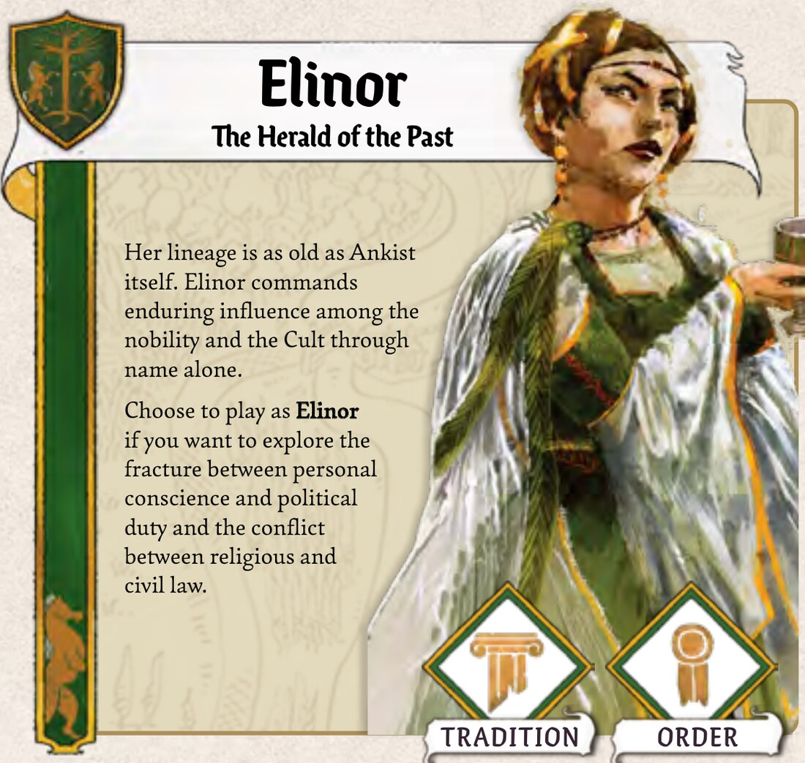
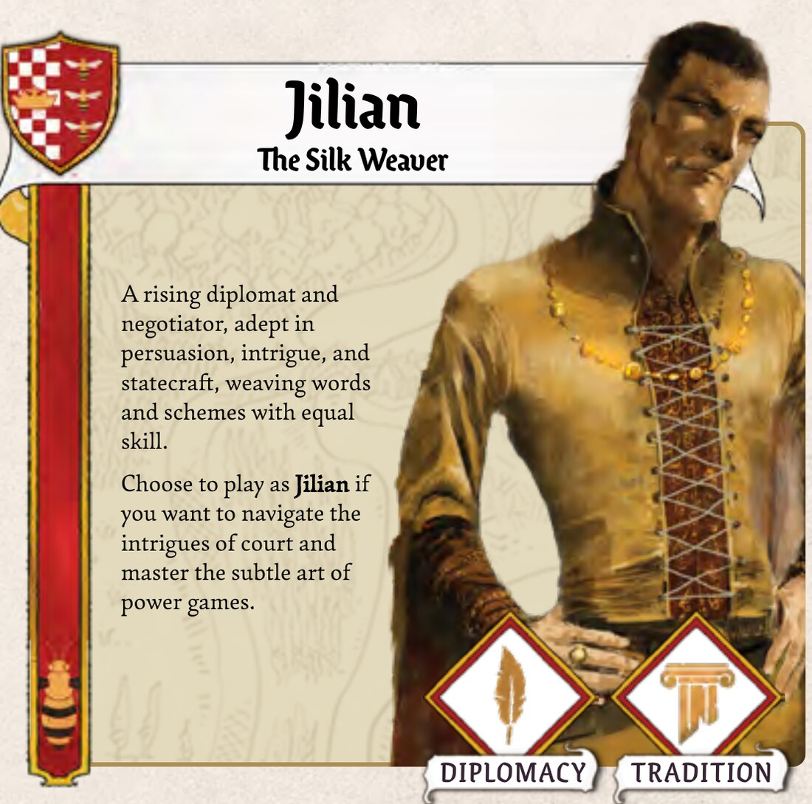
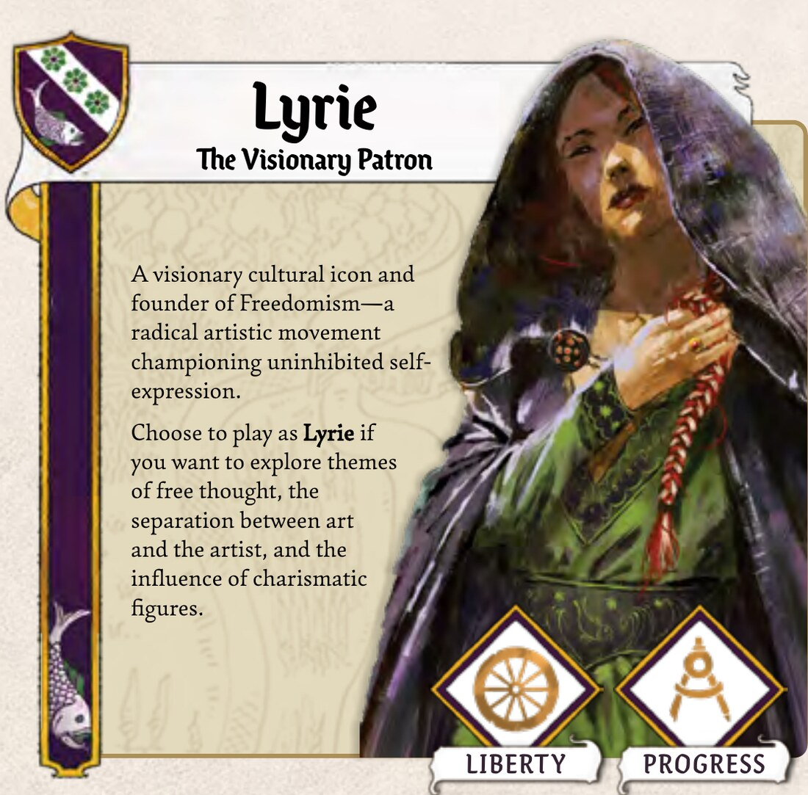
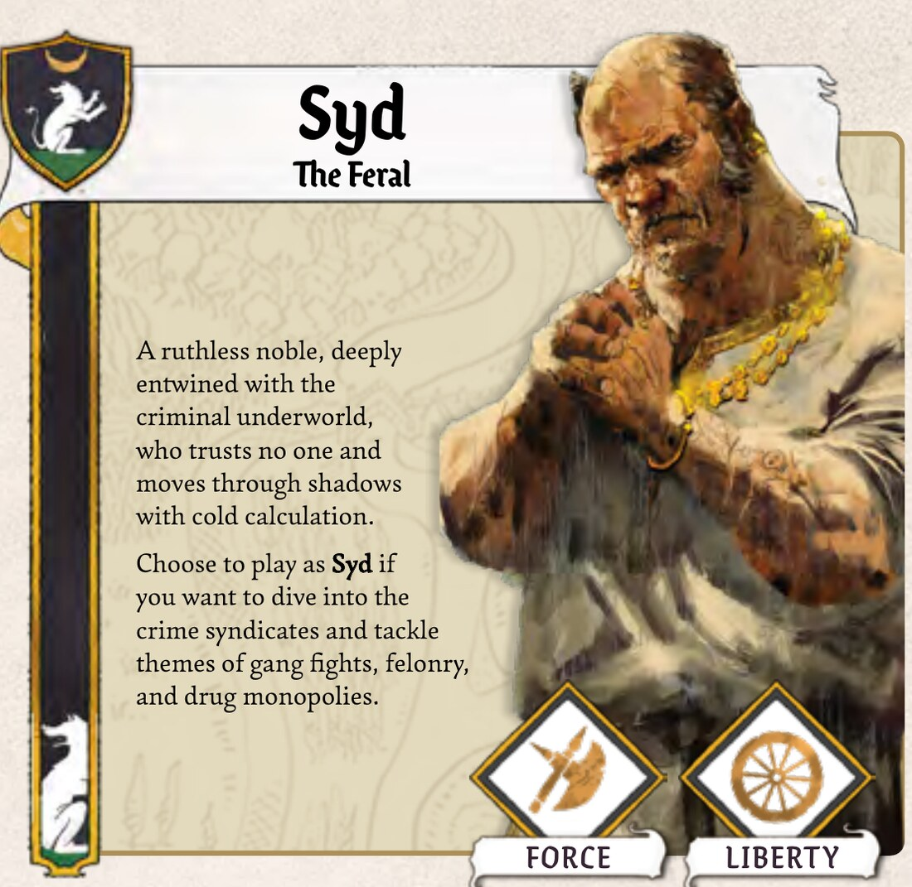
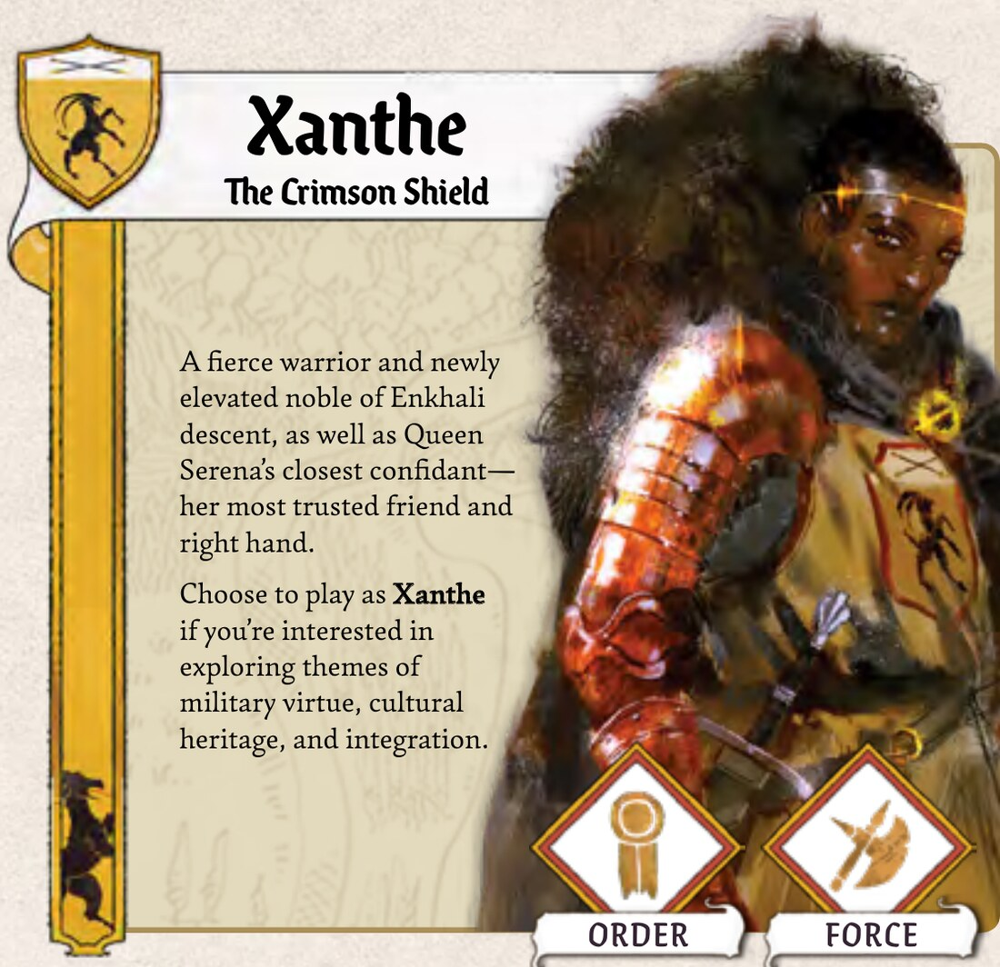
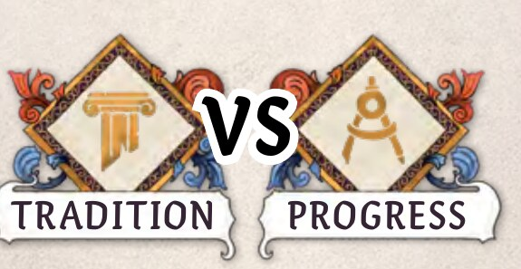
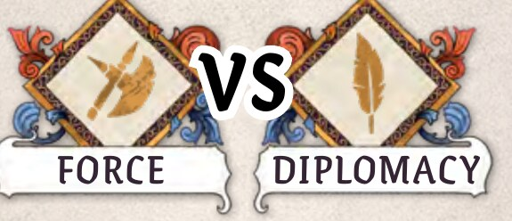
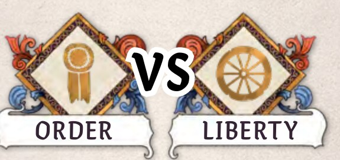

Jedes Haus im Rat wird von einer von sechs Figuren angeführt. Du spielst deine Figur die ganze Kampagne lang, alle 14 bis 18 Spiele. Jede Figur steht für zwei Ideologien und hat ihre eigene Geschichte, die sich über die Spiele entfaltet.

Mentor von Serena und einer der fortschrittlichsten und scharfsinnigsten Gelehrten des Reichs. Aesyas treibt das Reich seit Langem zu Reformen an.
Wähle Aesyas, wenn du das heikle Gleichgewicht zwischen Moral und Fortschritt ausloten willst und die Frage, wozu Wissenschaft da ist.

Ihr Geschlecht ist so alt wie Ankist selbst. Allein ihr Name verschafft Elinor bleibenden Einfluss beim Adel und beim Kult.
Wähle Elinor, wenn du den Riss zwischen persönlichem Gewissen und politischer Pflicht ausloten willst und den Streit zwischen geistlichem und weltlichem Recht.

Ein aufstrebender Diplomat und Unterhändler, gewandt in Überredung, Intrige und Staatskunst. Er webt Worte und Ränke mit gleichem Geschick.
Wähle Jilian, wenn du dich durch die Intrigen des Hofes bewegen und die feine Kunst des Machtspiels meistern willst.

Eine visionäre Kulturikone und Gründerin des Freedomism, einer radikalen Kunstbewegung, die für ungehemmten Selbstausdruck eintritt.
Wähle Lyrie, wenn du dich mit freiem Denken befassen willst, mit der Frage, ob man das Werk vom Künstler trennen kann, und mit der Macht charismatischer Figuren.

Ein skrupelloser Adliger, tief verstrickt in die Unterwelt. Er traut niemandem und bewegt sich mit kalter Berechnung im Schatten.
Wähle Syd, wenn du in die Verbrechersyndikate eintauchen willst, mit Bandenkriegen, Verbrechen und dem Monopol auf Drogen.

Eine wilde Kriegerin, frisch in den Adelsstand erhoben, aus enkhalischem Geschlecht. Sie ist Königin Serenas engste Vertraute, ihre treueste Freundin und rechte Hand.
Wähle Xanthe, wenn dich soldatische Tugend, kulturelles Erbe und Integration reizen.


